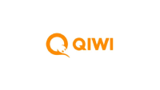
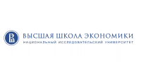
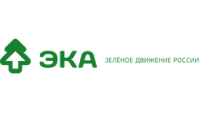
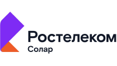
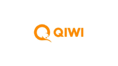
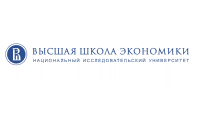
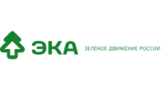
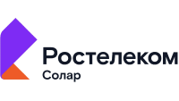

Я — Салихова Надежда, интегральный коуч, расстановщик.
С 2016 года профессиональный коуч. член Ассоциации русско-язычных коучей (коуч АРК).
В своей работе я помогаю клиентам находить и соединяться с собой истинным.

“В жизни человека возможно всё о чём он может подумать и что для него важно.”
С 2016 года профессиональный коуч. член Ассоциации русско-язычных коучей (коуч АРК).
В своей работе я помогаю клиентам находить и соединяться с собой истинным.

Образование
1991 – 1996гг. Нижегородский государственный университет им. Н.И. Лобачевского, ф-т Вычислительной математики и кибернетики

2000 – 2002гг. Нижегородский государственный университет им. Н.И. Лобачевского, ф-т Финансовый, специальность – Бухгалтерский учёт и аудит, квалификация - экономист

2015-2016г. Международный Эриксоновский Университет Коучинга, «Наука и искусство трансформационного коучинга», профессиональный коуч МЭУК
Ноябрь 2015г. | Международный Эриксоновский Университет Коучинга, «Квантовый ум: мышление в четырёх квадратах»
Февраль 2016г. | Международный Эриксоновский Университет Коучинга, «Свобода любить: 9 навыков эмоциональной компетентности»
Октябрь 2016г. | Международный Эриксоновский Университет Коучинга, «Глубинный коучинг: Продвижение Духа»
2017-2018 гг. - Онлайн программа «От «Я» к «МЫ»» в Санкт-Петербургском Институте Коучинга
2020 г. - Программа "Трансформация Лидерства: сертификация дебриферов профиля развития лидерства Harthill LDP", сертифицированный дебрифер

2018-2021 гг. – Программа профессиональной переподготовки "Интегральные технологии развития людей и организаций» Институт коучинга Санкт-Петербург

Дополнительная экспертиза
01
С 2002г. исполнительный директор ООО «Руна С» г.Нижний Новгород, консультант по бюджетному учёту для государственных учреждений, собственный бизнес.
02
Фасилитация групповых процессов в командах.
03
Арт-коучинг, метафорические карты, системно-феноменологический подход.
04
2021г. – Курс «Тропою Данте» центр психологии «Бережно и нежно» Васильев Андрей
05
2021-2022г. – Авторский курс «Психотерапия – служение душой» (сертификат о повышение квалификации ОППЛ)
06
2022г. – Школа корпоративного антрополога, Тренинг-бутик Марк Кукушкин, диплом КУПНО (университет правительства Нижегородской области)
07
2021- 2024г. - Программа "Регрессология Add-Up подход" Поляковой В.В.
08
2023-2024гг. - Обучение методу Вселенской терапии Л.Б. Тальписа

Клиенты
Собственники бизнеса, топ-менеджеры, рядовые сотрудники, студенты, а также:
 








Публикации
Книга для детей и не только:
Приключения зайчика Сени, волшебные и невероятные. Книга 1.Приключения начинаются.
"Химическая" встреча 20 минут
0 ₽
На этой встрече мы знакомимся. Вы сможете задать любые интересующие вас вопросы обо мне. Прояснить для себя, что такое коучинг. Понять, подходим ли мы друг другу как коуч и клиент.
Пакет из 10-12 коуч-сессий
9 000 ₽ - 1 сессия
10-12 встреч с интервалом 7-14 дней. Работа с большими запросами.
Разовая коуч-сессия
12 000 ₽
Длительность 60 минут.
Годовая поддержка коуча
250 000 ₽
1 встреча ежемесячно 60 минут, поддержка по телефону на протяжение года (без ограничения).
Пакет из 5 коуч-сессий
10 000 ₽ - 1 сессия
5 встреч с интервалом 7-14 дней. Работа с небольшими задачами.
Фасилитация
от 5 000 ₽ за час
Фасилитация групповых процессов в группе/компании.
Расстановка классическая
7 000 ₽
расстановка проходит онлайн
Вселенская терапия
8 000 ₽
метод Вселенской терапии Л.Б.Тальписа
Оставьте заявку и я свяжусь с вами